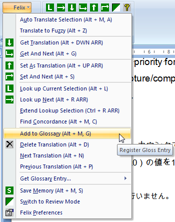
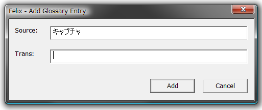

You can easily add new Felix glossary entries right from Microsoft Word.
First, select the word or words to serve as the source. Next, from the Felix menu, select Add to Glossary. Alternatively, press ALT + M, then G.

The Add Glossary Entry dialog box appears, with the selected text as the source.

Enter a translation, and click Add. The entry is added to the Felix glossary.
Note that if you are in translation mode (you are translating the document), the selection becomes the source segment, but if you are in review mode (you are reviewing a translation), the selection becomes the translation segment, and you are prompted to add the translation for it.